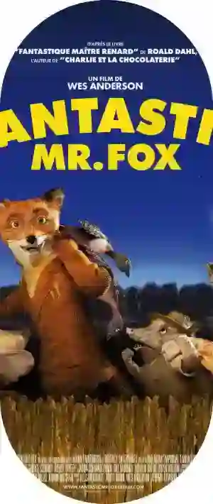

Wes Anderson, le peintre contemporain du cinéma
« Même si mes films peuvent parfois sembler un peu byzantins et complexes, tout ce que je veux faire, c’est raconter une histoire de façon conventionnelle »

L'Hôtel Budapest, une richesse cinématographique
Vraie claque visuelle, The Grand Budapest Hotel se voit recevoir l'oscar des meilleurs décors de films, en 2015. Les nombreuses questions que les spectateurs se posent à la vue des plans de Wes Anderson devant son chef d’œuvre sorti en 2015, sont justifiées. L’ambiance burlesque représentée pendant une heure quarante, la temporalité presque irréelle et la tonalité rosée très kitch plongent le spectateur dans une expérience hors du temps.
Une histoire réfléchie
1932, nous suivons Zero Mustafa, fraichement engagé en tant que Lobby Boy à l’hôtel Budapest. A ses côtés, Monsieur Gustave, attachant, drôle, attaché à ses clients, le concierge de l’hôtel se retrouve mêlé à une histoire de peinture et d’héritage. Qui peut bien être le propriétaire de cet hôtel prestigieux ? Personne ne le sait, là est toute l’intrigue du film. À travers les personnages et les décors, le réalisateur nous fait revivre une certaine partie de l’histoire. Les vêtements des prisonniers qui rappellent l’holocauste sont mêlés aux relations diplomatiques entre certains dirigeant politiques de l’époque. Avec une rétrospective en début et fin de film, Zero Mustafa se voit refuser l’accès au train puis tabasser par des soldats Russes à cause de ses origines. Un film pas si anodin finalement puisqu’il semble soulever des sujets historiques particuliers.

Wes Anderson enchaîne les films à succès
Âgé de 53 ans aujourd’hui, 2022, Wes Anderson se démarque par son univers burlesque, parfois difficile à cerner. Un temps d’adaptation est nécessaire avant de plonger complètement dans son univers. Si on ne saisit pas l’histoire dès le début, on est tout de suite séduits pas son style cinématographique particulier. Il ne s’arrête pas là ! Dernièrement, il sort dans les salles The french Dispatch, tourné à Angoulême. Étrangement lié visuellement à L’Hôtel Budapest et Moonrise Kingdom sorti en 2012. Dans un autre style, en 2009, il s’attaque au film d’animation en sortant The Fantastic Mr Fox. La plupart des films de Wes anderson font un tabac à chaque sortie et on ne cesse de se plonger dans un univers pour souffler.
Du même réalisateur
 Voir la fiche film
Voir la fiche film
The French Dispatch 2021
 Voir la fiche film
Voir la fiche film
Moonrise Kingdom 2012
 Voir la fiche film
Voir la fiche film
La Vie Aquatique 2004
 Voir la fiche filmFantastic Mr.Fox 2009